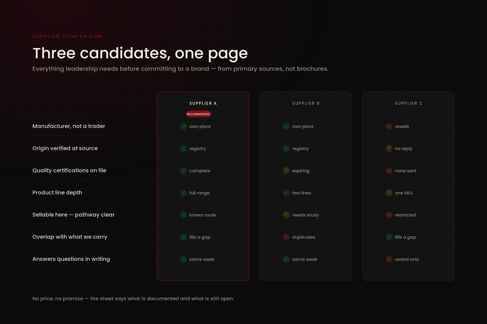
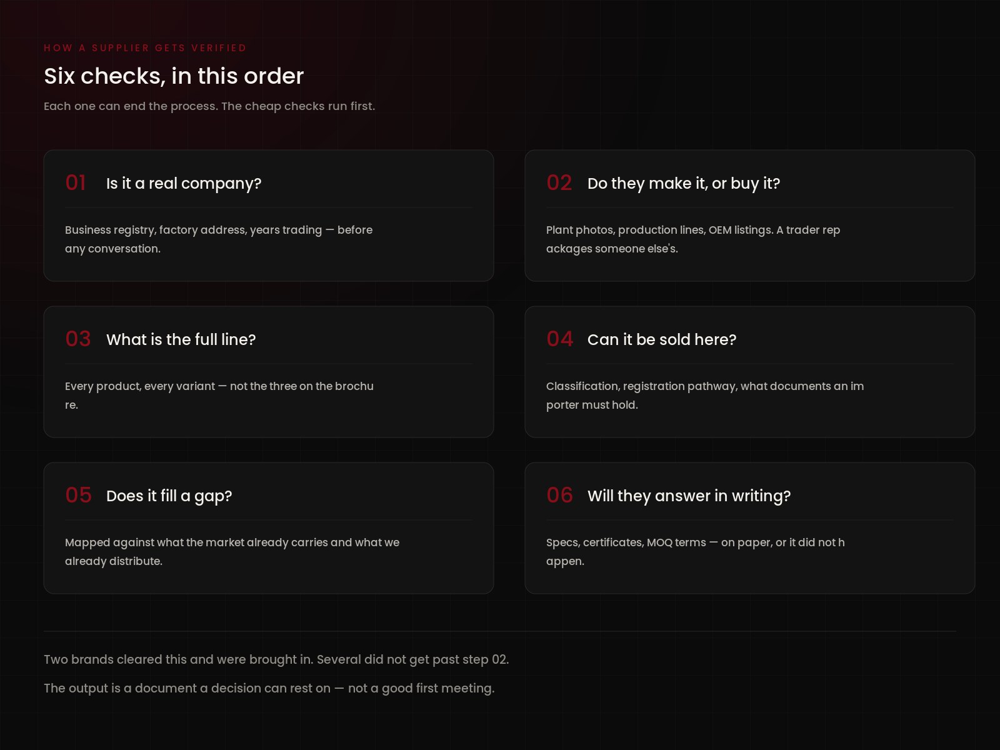
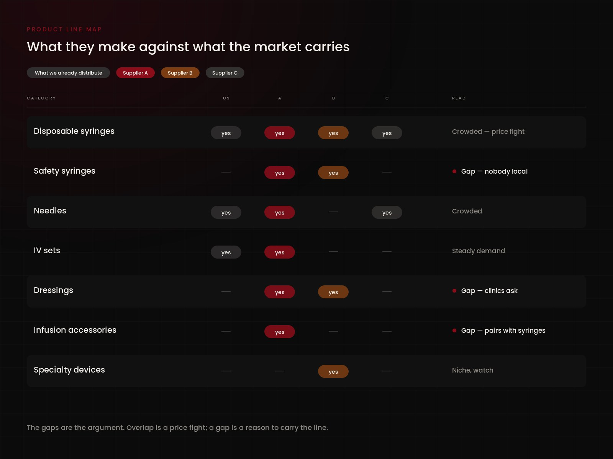

A distributor only grows as fast as it finds brands worth carrying. The hard part is not finding names — it is separating manufacturers from traders, and finding out early whether a product can legally be sold in the Philippines at all.
Research manufacturers and their full product lines from primary sources rather than brochures. Verify origin, certifications and what a company actually makes versus what it resells. Map each one against what the market already carries, then build side-by-side comparisons — product overlap, gaps, regulatory requirements, and the questions leadership needs answered before committing to anything.
Sungshim and EROP brought in and built out, and a repeatable way of evaluating the next one — so a decision rests on documents rather than on a good first meeting.

